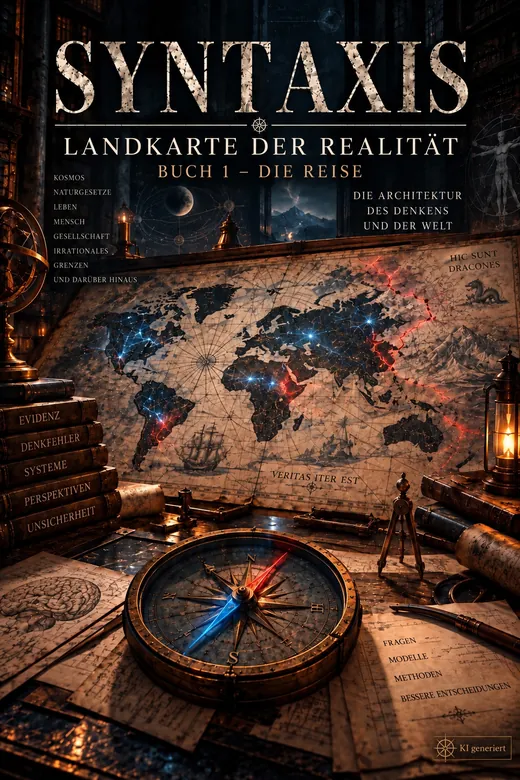

Die Landkarte
der Realität
Das Hauptwerk. Wenn die Chroniken das Lagerfeuer sind, an dem gestaunt wird, ist die Landkarte das Steingebäude, das vor der Kälte schützt: zwei Bücher über das Handwerk selbst — die Architektur des Denkens und der Welt.
Die Landkarte beginnt nicht bei den Antworten, sondern beim Werkzeug. Erst die Frage, was eine Behauptung überhaupt prüfbar macht. Dann die Naturgesetze, gegen die sie geprüft wird. Dann der Geist, der prüft — und der dabei selbst die unzuverlässigste Komponente ist.
Was das Werk von einem Ratgeber unterscheidet, steht in Band IV: ein eigener Band über die Grenzen der eigenen Methode. Über das, was Wissenschaft nicht kann, über die Ist-Soll-Lücke und über die Replikationskrise. Wer die Karte für das Gelände hält, hat sie nicht gelesen.
Der Ton ist der einer Expedition. Es gibt Expeditionskarten am Anfang jedes Bandes, ein Rüstzeug-Inventar am Ende jedes Kapitels und ein Dojo, in dem geübt wird, statt zugestimmt.

Cover KI-generiert
Betrachte dieses Wissen nicht als Rüstung, die dich unbesiegbar macht, sondern als eine Landkarte, die dir zeigt, wie unermesslich groß das Territorium des Wissens wirklich ist. Band I, Kapitel 1.4
- Signatur
- LR-[BAND]-[SEKTION] · Werkstatt: LR-W-[TEIL]-…
- Form
- Sachbuch mit Übungsteil und Nachschlagewerk
- Umfang
- zwei Bücher, rund 335.000 Wörter
- Lizenz
- CC BY-NC 4.0 — Bearbeitung erlaubt
Buch 1 · Die Reise
acht Bände, der Reihe nach zu lesenDas Rüstzeug des Denkens
Evidenz, Konsens, Denkfehler, Statistik, die ersten Katas.
Die Maschine der Realität
Vom Urknall bis zur Zelle; die Naturgesetze als Schiedsrichter.
Der Geist in der Welt
Das Betriebssystem des Einzelnen, der Gruppe, der Erzählung.
Die Grenzen der Karte
Was die Methode nicht kann, und wie man im Nebel navigiert.
Die Architektur der Wahrheit
Die Schatten-Kathedrale und der Garten dagegen.
Das Dojo
Der Übungsteil, Gürtel für Gürtel: Werkzeuge erkennen, Prozesse anwenden, Strategien simulieren, lehren — bis zur Meisterprüfung, zum Sparringspartner aus Silizium und zur Festung des Geistes (Immunisierung, Resilienz, verbales Judo).
Die Anatomie eines Glaubenskrieges
Erste Meister-Autopsie: die Kreuzzüge als Mechanik von Gewalt, Manipulation und kollektivem Rausch.
Die Anatomie der Chimäre
Zweite Meister-Autopsie: wie Theosophie, Ariosophie und die „Protokolle“ zur braunen Esoterik verschmolzen — und wo ihre Muster heute wiederkehren.
Drei Begleiter reisen in Buch 1 mit: der Kompass mit Checklisten für den Akutfall, das Mini-Glossar mit hundert Werkzeugen in Kürze, und das Schutz-Kompendium.
Buch 2 · Die Werkstatt
ein Nachschlagewerk, in jeder Reihenfolge zu betretenKein Weg von Anfang bis Ende, sondern eine Werkstatt, die man betritt, wenn man etwas Bestimmtes sucht: 171 Werkstücke in acht Clustern, 28 Fallakten, dazu Modell-Bibliothek und taktisches Kompendium.
Der Kompass
Das große Glossar
171 Werkstücke in acht Clustern
Die Modell-Bibliothek
Das Taktische Kompendium
28 Fallakten
Das interdisziplinäre Netzwerk
Die Meister-Lösungen
Die Werkstatt der Zukunft
Das Schutz-Kompendium
Stichwortindex
Wie die Bände verweisen
das SignatursystemAlle vier Syntaxis-Reihen tragen Kennungen, mit denen sie aufeinander zeigen. Wer in den Chroniken über Dr. Ratios Elementschmiede stolpert, findet die Physik dahinter unter LR-II-2. Wer in einer Autopsie ein Warnzeichen wiedererkennt, findet es unter LR-I-1.5.
| Reihe | Kennung | Beispiel |
|---|---|---|
| Landkarte der Realität, Buch 1 | LR-[BAND]-[SEKTION] | LR-I-1.2.3 — Ockhams Rasiermesser |
| Landkarte der Realität, Buch 2 | LR-W-[TEIL]-… | eigene Signatur, damit „LR-II“ eindeutig Band II bleibt |
| Chroniken von Neocortex City | NC-[BAND] | NC-3 — Das Tier im Menschen |
| Autopsien der Schatten | AU-[SEKTION]-[NUMMER] | AU-A-04 — Klimawandel |
| Licht der Realität | LD-[BAND]-[FALL] | in Vorbereitung |
Die Suche oben nimmt diese Signaturen direkt entgegen. Tippe / und dann etwa LR-I-1.7.1.
Bearbeiten ausdrücklich erlaubt
Die Landkarte steht unter CC BY-NC 4.0. Du darfst daraus Unterrichtsmaterial machen, Kapitel kürzen, Beispiele austauschen, das Werk übersetzen oder Teile in eigene Kurse übernehmen. Drei Bedingungen: Autor und Werk nennen, Änderungen kenntlich machen, nichts damit verdienen.